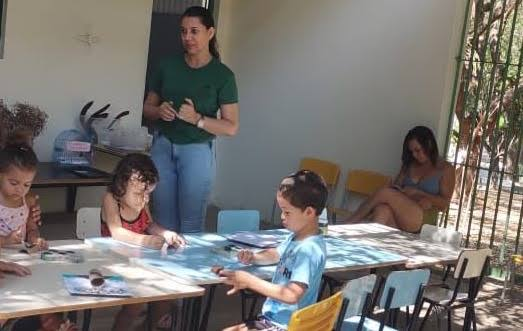

Projeto Educação para o Futuro
Oferecemos aulas de reforço escolar, informática básica e oficinas culturais para crianças e adolescentes no contraturno escolar.

- Atendidos: 150 crianças por mês
- Meta: Expandir o laboratório de computadores